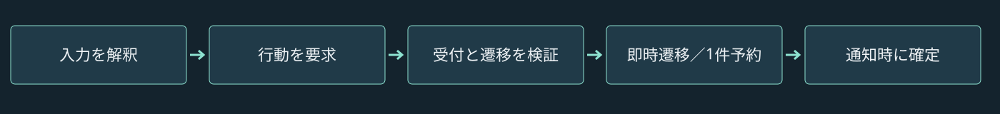
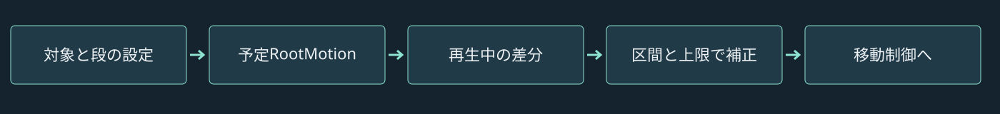
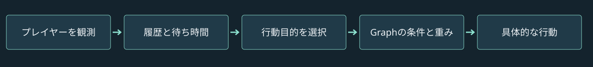

戦闘と制作を支える、
4つの仕組み。
操作や調整の課題と、実装した仕組みを対応付けて紹介します。
掲載用本文の詳細を開いて読めます。完成度・操作感・改善率は静的調査だけでは確定していません。
入力の予約と行動遷移
先行入力を保存する区間と、行動を切り替える受付を分け、アニメーションと遷移表で調整します。

詳しい説明を読む
目的
連続攻撃や防御への切り替えを調整するには、入力を受け付けることと、キャラクターの行動を切り替えることを分けて扱う必要があります。
仕組み
行動の要求はPlayerControllerに集め、現在の状態、接地・空中、スキルの実行可否などを確認します。すぐに切り替えられない場合は、先行入力またはコンボの受付が開いているときに限って次の行動を保存します。同じ弱攻撃の入力は次のコンボ段として予約し、アニメーション側のコンボ通知で確定します。
工夫と方式の理由
回避系のキャンセルと、攻撃などへの派生には別の受付状態と遷移表を用意しています。受付が開いた瞬間にも保存済み入力を確認するため、「早めに押した入力を保存する区間」と「動作を切り替えてよい区間」を個別に設定できます。先行入力は1件を保持する構成です。
ジャストガード・ジャスト回避の成功時には短時間の反撃タグを付けます。この間は通常の攻撃入力を反撃へ置き換え、成功前に保存された攻撃も反撃へ切り替えます。複合入力でスキルを要求する場合は通常行動への入力を消費し、同じボタンによる二重発動を防いでいます。
効果
アニメーションに合わせて受付の開始・終了を設定し、遷移表で切り替え先を限定できます。次の攻撃をつなぐ余地と、防御へ切り替える余地を、別々の調整項目として扱える構成です。
見せる素材
同じ弱攻撃で入力の受付前・受付中を比べる映像と、ジャスト成功→攻撃入力→反撃の連続映像。受付区間、保存中の行動、現在の行動を画面に併記します。
スキルのMotionWarp
スキルの段ごとに補正区間と上限を指定。予定RootMotionと対象の停止距離から移動を補正します。

詳しい説明を読む
目的
攻撃モーションに含まれる移動だけでは、対象との距離や向きによって、踏み込みの終点が狙った位置と合わない場合があります。元の移動を基準に、必要な区間だけ補正できるようにしています。
仕組み
スキルの各段に補正プリセットを指定します。対象を選び、その段の予定RootMotionをワールド空間へ変換して補正要求へ渡します。再生中はアニメーションの正規化時間と実際の移動差分を使って、対象に向かう移動や回転を補正します。
工夫と方式の理由
開始・終了の時刻、補正量と速度の上限、回転角、停止距離を設定できます。補正を攻撃全体へ一律にかけず、段ごとに調整する構成です。双方のCapsule半径も停止距離へ反映し、突進速度を持つ段では、初期設定の位置補正を無効にして移動が重ならないようにしています。
停止距離の制限では、移動後の位置だけでなく、水平面上の移動線分と停止円の交点を調べます。1フレームの終点が円の外側でも、移動途中で対象へ入り込むケースを扱います。補正要求は段の変更や中断時に止め、次の動作へ持ち越さないようにしています。
効果
攻撃素材を変更せずに、対象に近づける区間や補正の強さを設定できます。ON／OFFと補正前後の移動量を確認するGUIを用意し、設定による違いを比較できるようにしています。
見せる素材
同じスキル・開始位置・対象位置のON／OFFを横に並べます。距離がずれる例と斜め方向の例をそれぞれ用意します。通常攻撃のAttackAssistは別の処理なので、MotionWarpのON／OFF比較はスキルを使って撮影します。
人型ボスの判断と行動
観測と履歴から行動目的を選び、グラフの条件と重みに反映。反応待ちと防御のコストを調整します。

詳しい説明を読む
目的
プレイヤーとの位置関係だけでなく、攻撃・ガード・回避の傾向をボスの判断へ反映し、判断の条件と反応頻度を調整できるようにしています。
仕組み
観測した状況と行動履歴から、攻め、防御、追跡、間合いの調整などの行動目的を選びます。この目的をIntentとして持ち、BehaviorGraphの実行候補と抽選の重みに反映します。判断する処理と、具体的な行動を実行する処理を分けています。
工夫と方式の理由
同じ行動の反復は反応待ち時間へ、ガードや回避の傾向は候補の条件と重みへ反映します。通常の防御候補には反応待ち時間と行動ごとのコストを設け、使える予算の残量も確認します。状況によっては観察を選ぶ確率も設定しています。
ガード継続への対抗や強攻撃への専用判断もあり、すべての判断を同じ抽選だけで処理しているわけではありません。GUIに現在の目的、予算、反応待ち時間などを表示し、行動が選ばれた条件を追えるようにしています。
効果
距離・履歴・待ち時間・予算を分けて調整でき、条件を満たさない行動を候補から除外できます。機械学習ではなく、観測情報、条件、履歴、重みを使って行動を選ぶ実装です。
見せる素材
ガードを継続する場面と回避を繰り返す場面で、現在のIntentと候補の重みをゲーム画面の横に表示します。確率を含むため、1回の映像だけで「必ずこの行動を返す」とは説明しません。
演出の編集と試写
登録したActionの時刻を編集し、本番と同じ経路で試写。停止時は試写前のSceneへ戻します。

詳しい説明を読む
目的
カメラ、アニメーション、VFXなどの演出では、開始の時刻や待機条件を合わせて確認する必要があります。登録済みのActionを並べ、Scene内で試写できるようにしています。
仕組み
ActionSequenceのデータを下書きとして読み込み、Actionの実行時刻をタイムラインで編集します。試写はゲーム中と同じ更新経路を使い、編集内容を適用したいときは元のComponentへ反映します。永続化にはSceneの保存が必要です。
工夫と方式の理由
試写前のSceneをメモリへ退避し、停止時は既存の復元経路を使います。試写中の適用や保存にも制限を設け、試写で変わった状態を元の編集データへ混ぜない構成です。
シークはSceneを再構築し、先頭から固定1/60秒の更新で指定時刻まで再評価します。1フレーム内の更新回数に上限を設けています。任意時刻の状態を直接保存して瞬時に復元する方式ではありません。
アニメーションに結び付いたActionは、絶対時刻に推測変換せず別表示にしています。Sequenceの時計とアニメーションの再生位置を確認し、異なる時間基準を混同しないようにしています。
効果
Actionの時刻調整、試写、停止・復元までを同じ画面から進められます。演出の編集専用に別の実行方式を増やさず、既存のActionSequenceと対応を保つ構成です。
見せる素材
Actionの時刻変更→試写→シーク→停止→元のSceneへの復元を続けて見せます。変更前後の時刻を拡大し、何を調整したのか分かる映像にします。